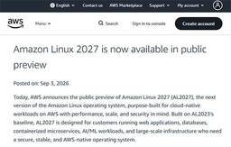
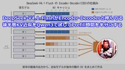

直近1週間の人気フィード
はてなブックマーク数を元に新着優先で並べ替え

メモリに載らないGROUP BYをDuckDBはどう処理するのか 73
73 株式会社ログラス テックブログのフィード
株式会社ログラス テックブログのフィード
!この記事は毎週必ず記事がでるテックブログ Loglass Tech Blog Sprint の160週目の記事です！4年連続達成まであと52週となりました！ログラスの龍島(@hryushm)です。先日スイカを一玉いただく機会があったのですが、とても大きいので一度に全部は食べきれず、切り分けて冷蔵庫に入れて数日かけて食べました。ということで今日はメモリに載りきらないデータの処理方法の話です。 はじめに先日、DuckDBの開発元であるDuckLabsがAWSに加わることが発表されました[1]。そのDuckDBは、メモリより大きなデータを扱うのが得意だと言われます。公式ドキュメン...
3日前
Claude Codeとの会話を、チームの記憶にする ── 開発の文脈をメモリに残して共有する仕組み 37 ZOZO TECH BLOG
ZOZO TECH BLOG
はじめに こんにちは、ZOZOTOWN開発本部Webバックエンドブロックの和氣です。普段はZOZOTOWNのバックエンドを担当しています。 日々の開発にClaude Codeを使っています。使ううちに、仕様や経緯を毎回プロンプトで説明し直していることに気づきました。そこで、Claude Codeとの会話をMarkdownで残し、作業に合わせたコンテキストをClaude Code自身が組み上げるようにしました。以降、残したMarkdownを「メモリ」と呼びます（Claude Code標準のメモリ機能とは別物です。違いは後述します）。 現在、メモリは個人に閉じず、職種を跨いで十数人で共有しています…
3日前

VS Code誕生から現在までの物語「The Story of VS Code」YouTubeで公開。作者のエリック・ガンマ氏はなぜIBMからMSへ移籍してVS Codeを作ることになったか 232 Publickey
Publickey
Visual Studio Code（以下、VS Code）はいまやITエンジニアのあいだで最も人気のあるコードエディタの地位を確立しています。 VS Codeはオープンソースであり、そしてWindows、Mac、Linuxのマルチプラット...
6日前

生成AIによるデータ分析を「仕様」から始める：仕様駆動データ分析（SDA）の実践 34 NTT docomo Business Engineers' Blog
NTT docomo Business Engineers' Blog
生成AIを使えば、SQLやPythonコード、グラフなどのたたき台を短時間で作れます。 しかし、分析目的や指標、対象データなどの前提が曖昧なままでは、生成された結果が正しく見えても、そのまま意思決定に使えるとは限りません。 そこで私たちは、分析に必要な前提を「仕様」として整理し、その仕様を基準に人間とAIが段階的に分析を進める仕様駆動データ分析（Specification-Driven Analytics、以下SDA）というアプローチを検討しました。 なお、SDAは、仕様駆動開発などの考え方を基に、私たちが生成AIを使ったデータ分析で試行している進め方を整理したものです。新しい標準手法を提唱す…
4日前

ETL 基盤を Embulk から dlt + dbt に乗り換えた 2 つの理由
55 エムスリーテックブログ
エムスリーテックブログ
この記事はコンシューマーチームブログリレー 4日目の記事です。 Embulk 0.9.25 で動かしていた担当プロジェクトの ETL を、dlt + dbt と Step Functions に全面移行しました。証明書エラーと BigQuery のレガシー API 利用で観念した話です。 こんにちは。エムスリーのコンシューマーチームエンジニアの園田です。 コンシューマーチームで大幅なメンテナンスなく元気に動いていたEmbulkですが、今年の夏に全部やめました。 なぜやめたのか、なぜ dlt + dbt なのか、やってみてどこでハマったのか、という順で書いています。 新しい技術の話はほとんどなく…
4日前
QuineMakerを作った話と技術的な解説 22 エムスリーテックブログ
はじめに エムスリー株式会社、業務執行役員VPoEの河合(@vaaaaanquish)です。 本記事は、私もGMとして在籍する「AskDoctors開発チーム」のブログリレー 5日目の記事です。 本記事では、私が個人開発した「QuineMaker」というサービスの技術面の紹介をします。 はじめに QuineMakerについて Quineについて Quineの作り方 画像からのQuine生成 画像に対して適切なコードを見つける 色付きQuineの生成 動画からのQuine生成 動画からのQuineの難しさ おわりに We are hiring !!
3日前

Amazon Linuxが4年ぶりにメジャーバージョンアップ、「Amazon Linux 2027」パブリックプレビュー。SELinuxがデフォルトで強制モードに 51 Publickey
Amazon Web Services（AWS）は、AWSに最適化されたLinux OSの4年ぶりとなるメジャーバージョンアップ「Amazon Linux 2027」をパブリックプレビューとしてリリースしました。 現時点の正式版はAmazo...
4日前
AWS、AIがフルスタックAWSアプリの基本コードを、セキュリティ、可観測性、インフラまで一気通貫で生成する「Nx Plugin for AWS 1.0」、オープンソースで公開 20 Publickey
Amazon Web Services（AWS）は、AIがフルスタックのAWSアプリケーションに必要なアプリケーションの基本的なコードに加えて、セキュリティや可観測性などの要件も備えたインフラ構成のコードもまとめて生成してくれるツール「Nx...
3日前

巨大オンラインゲーム「EVE Online」。ゲームを支える240万行のPython 2.7のコードをPython 3へ移行すると発表 44 Publickey
宇宙を舞台にした世界最大級の大規模オンラインゲーム「EVE Online」が、ゲームを支える240万行のPythonコードをPython 3に移行すると発表しました。 We have officially started our codeb...
4日前
AIエージェント向けコーディングルールをArchUnitで機械的に検証する運用 69 ZOZO TECH BLOG
はじめに こんにちは。商品基盤部の藤本です。 私たちのチームでは、生成AIコーディングエージェント（以下、AIエージェント。主にClaude Code）を使って開発に取り組んでいます。以前からAIエージェントに一貫した実装をしてもらうため、ルールを書いて指示する運用を続けてきました。しかし、ルール同士の矛盾やレビューだけでは遵守を保証できないといった課題がありました。本記事ではこの課題と、ArchUnitによる機械的な検証へ落とし込むまでの取り組みを紹介します。
6日前

「ひかりでんわ」を作って学ぶ、子ども向け通信実験教室をやった話 42 NTT docomo Business Engineers' Blog
従業員の家族を職場に招く「ファミリーデー」で、子どもたちに通信の仕組みを体験してもらうため、光ファイバーを使った音声通話装置を一から作りました。 この記事では、回路の試作やプリント基板・ケースの製作、人数分の量産、そして当日の実験教室の様子までをご紹介します。 はじめに AIロボット部とは 光ファイバーで「通信」を体験してもらう 通信装置を作る アナログ回路と格闘する プリント基板を作る ケースも3Dプリンターで作る そして量産へ…… 当日の様子 おわりに はじめに こんにちは、AIロボット部（社内サークル）部員の浅野秀平です。 普段はデジタル改革推進部で、社内のデータ分析の仕事をしています。…
4日前

AI時代のエンジニア選考・面接のパターン 59 カミナシ エンジニアブログ
カミナシ エンジニアブログ
カミナシで、ソフトウェアエンジニアをしている osuzu です。 面接官として中途採用の選考にも関わっていますが、ここ1年くらいでエンジニア選考の設計を見直す必要が強まってきたと感じています。 私のチーム採用では、これまでオンラインコーディングテストや持ち帰り課題を選考に利用してきましたが、AIの登場によって、候補者さまはAIを使って課題を作成するようになり、Opus 4.5 がリリースされたあたりから成果物の精度がぐんと上がりました。 その結果、提出された課題から期待する経験値と、面接でお会いした本人から見える経験値が、うまく重ならないケースが出はじめたのです。提出物の設計や実装は的確なのに…
6日前

「みんなのもの」の在庫は、1つのドメインとして成立するのか ── 20年もののモノリスから境界と責務を決めるまで 32 ZOZO TECH BLOG
はじめに こんにちは、ECプラットフォーム部マイクロサービス戦略ブロックの半澤です。普段は、システムアーキテクチャの全体最適化など、モノリスからマイクロサービスへシステムをリプレイスする過程で生じる、複数チーム間の課題解決を主に担当しています。 本記事では、ZOZOの基幹システムリプレイスにおいてモノリスからマイクロサービスへ移行するために、イベントストーミングを起点にドメイン間の境界と責務の決定をどのように進めたかを紹介します。あわせて、既存コードの解析と付箋への変換に使ったClaude CodeのAgent Skillsの設計を、付録で共有します。なお、イベントストーミング（業務で起きる出…
4日前

HTMX 4.0正式リリース。内部実装がXHRからfetchに移行しStreaming HTMLが可能に、属性はデフォルトで子要素に継承されないように変更など 44 Publickey
HTMLに属性を追加するだけで、Webページにサーバと連動した動的なアプリケーションの機能を追加できるJavaScriptライブラリ「HTMX」の最新バージョンとなる「HTMX 4.0」正式版のリリースが発表されました。 very happ...
5日前

DeepSeek-V4.1-FlashがEncoder-Decoderと呼んでいる後半層KV近似をQwen3で試してPrefill時間を半分にする 3 きしだのHatena
きしだのHatena
DeepSeek-V4.1-Flashの仕組みをみて思ったんだけど、Encoder-Decoderモデルということになっていますが、実際のところはプレフィル時に後半の層のKVを近似モデルで埋める仕組みになってます。 https://nowokay.hatenablog.com/entry/2026/09/10/203534 なので、近似モデルさえ用意すれば既存のモデルにも適用できてPrefillの時間が半分になるんではないかということで、試したらちゃんと動きました。 DeepSeek-V4.1-Flashの場合は近似モデル前提で学習しているため、EncoderとDecoderの役割が明確になっ…
2日前

JavaScriptをC言語にコンパイルする「porffor」がアルファ版に到達。ネイティブやWASMを生成可能 34 Publickey
JavaScriptを事前コンパイルしてC言語に変換するコンパイラ「porffor」（発音はpoor-for）がアルファ版に到達したことが発表されました（公式サイト、GitHubリポジトリ）。 作者のOliver Medhurst氏が明らか...
6日前

社長の考えをいつでも聞ける！AIコジーを社内公開 26
NTT docomo Business Engineers' Blog
NTTドコモビジネスでは、小島克重社長の考え方や経営判断の背景を、対話形式で相談できるAI社長「AIコジー」を開発しています。最初は経営幹部向けのAI社長として提供していましたが、2026年7月にセキュリティを守りながら一般の社員でも使えるように「AIコジー（全社版）」を公開しました。 参考：NTTドコモビジネス、AI社長が営業に助言 システムは外販も検討（日本経済新聞） 参考：「“社長AI”って意味ある？」→言った本人も手のひら返し 幹部の9割が高評価したNTTドコモビジネスの「AI小島社長」開発録（ITmediaNEWS） 以下では、幹部版を全社版へ広げるにあたって行った3つの工夫を、開発…
6日前

Yahoo!ニュースの表示高速化で広告のクリックは増えるのか 3LINEヤフー Tech Blog (LY Corporation Tech Blog
こんにちは。LINEヤフーのディスプレイ広告（以下、ディスプレイ広告）の開発と兼務で、全社横断のWebパフォーマンス改善に取り組んでいるエンジニアの今宮です。一般にWebページの表示速度はユーザー体験...
3日前

AWS、自然言語でデータ分析アプリを構築可能に、「Amazon Quick」に新機能 3 Publickey
Amazon Web Services（AWS）は、データ分析プラットフォーム「Amazon Quick」の新機能として、データ分析と表示を行うカスタムアプリケーションを自然言語の指示だけで構築できる新機能を発表しました。 Amazon Q...
3日前

既存システムのAI分析ワークフローを作り直す ── レビュー負担を減らす3つの改善 3 ZOZO TECH BLOG
はじめに こんにちは、ZOZOTOWN開発2部Webバックエンドブロックのぐらです。普段はZOZOTOWNのバックエンド開発を担当しています。ZOZOTOWNのリプレイスでは、既存システムの仕様を正確に把握することが欠かせません。私たちはこの分析にAIを活用してきました。しかし、人間による追加調査がまだまだ必要という課題を抱えていました。本記事では、AIによる既存システムの分析ワークフローを作り直した過程と、そこで得られた知見を紹介します。
4日前

AlphaGenome Atlas: A predictive map of every possible DNA letter change in the human genome 3 Google DeepMind News
Google DeepMind News
AlphaGenome Atlas maps the molecular effects of 9 billion single-letter DNA variants across the human genome.
4日前